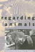
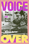
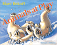
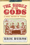
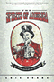

|
Death
in the Dining Room and Other Tales of Victorian Culture
Ames,
Kenneth L.
Henry-Russell Hitchcock Award, Victorian Society of America,
1993
Outstanding Academic Title, Choice, 1994 |

|
Regarding
Animals
Arluke,
Arnold and Clinton R. Sanders
Charles Horton Cooley Book Award, Society for the Study of
Symbolic Interaction, 1997 |

|
Voice
Over
The Making of Black Radio
Barlow,
William
Outstanding Academic Title, Choice, 1999 |

|
Animals at Play
Rules of the Game
Bekoff, Marc
Animal Behavior Society's Outstanding Children's Book Award, 2009 |
|
Closure
The Rush to End Grief and What It Costs Us
Berns, Nancy
Honorable Mention from the Sociology of Emotions section of the American Sociological Association, 2012
Charles Horton Cooley Award for Best Book from the Society for the Study of Symbolic Interaction, 2013
|

|
The Smoke of the Gods
A Social History of Tobacco
Burns, Eric
A "Best of the Best from the University Presses" program selection at the 2007 ALA Annual Conference |

|
The
Spirits of America
A Social History of Alcohol
Burns,
Eric
A "Best of the Best from the University Presses" program selection at the 2004 ALA Annual Conference |

|
The
World of Kate Roberts
Selected Stories, 1925-1981
translated
by Clancy, Joseph P.
Publishers Weekly Best Book, 1991 |

|
Critical
White Studies
Looking Behind the Mirror
edited
by Delgado, Richard and Jean Stefancic
Honorable Mention for Outstanding Books Awards, Gustavus
Myers Center for the Study of Bigotry and Human Rights in
North America, 1997 |

|
The
Neoconservative Mind
Politics, Culture, and the War of Ideology
Dorrien,
Gary
Outstanding Academic Title, Choice, 1994 |
|
Search
for Government Efficiency
From Hubris to Helplessness
Downs,
George W. and Patrick D. Larkey
Louis Brownlow Book Award, National Academy of Public Administration,
1988 |

|
The Textures of Time
Agency and Temporal Experience
Flaherty, Michael G.
Charles Horton Cooley Award for Best Book from the Society for the Study of Symbolic Interaction, 2012 |
|
Philadelphia
Murals and the Stories They Tell
Golden,
Jane, Robin Rice and Monica Yant Kinney, photographs by David
Graham and Jack Ramsdale
Athenæum of Philadelphia’s Literary Award, 2004 |

|
Framing
Blackness
The African American Image in Film
Guerrero,
Ed
Honorable Mention Theatre Library Association Award, 1994 |

|
Rude Democracy
Civility and Incivility in American Politics
Herbst, Susan
Doris Graber Award, American Political Science Association,
2013 |

|
The
Red Atlantis
Communist Culture in the Absence of Communism
Hoberman,
J.
Outstanding Academic Title, Choice, 1999 |

|
Vulgar
Modernism
Writing on Movies and Other Media
Hoberman,
J.
Nominated for the 1991 National Book Critics Circle Awards,
1991 |

|
Suicide Squeeze
Taylor Hooton, Rob Garibaldi, and the Fight against Teenage Steroid Abuse
Kashatus, William C.
Outstanding Academic Title, Choice, 2017
|

|
Koppett's
Concise History of Major League Baseball
Koppett,
Leonard
Nominee, Seymour Medal, 1989-1999, 1999 |

|
Running
Scared
Masculinity and the Representation of the Male Body
Lehman,
Peter
Book Alert's University Press Book of Choice, November,
1993 |

|
Poisoned
Ivy
Lesbian and Gay Academics Confronting Homophobia
McNaron,
Toni A. H.
Honorable Mention for Outstanding Books Awards, Gustavus
Myers Center for the Study of Bigotry and Human Rights in
North America, 1997 |

|
The
Trial Lawyer's Art
Schrager,
Sam
Outstanding Academic Title, Choice, 1999 |

|
Poems
Performance Pieces Proses Plays Poetics
Schwitters,
Kurt, edited by Jerome Rothenberg, translated by Pierre Joris
Pen Center USA West Literary Award for Translation, 1994 |

|
Brooklyn!
An Illustrated History
Snyder-Grenier,
Ellen M.
New York Society Library's New York City Book Award for Best
Book, 1996 |

|
The Scrapbook in American Life
edited by Tucker, Susan, Katherine Ott and Patricia
P. Buckler
Winner of the Allen Noble Award for best edited book, 2006 |